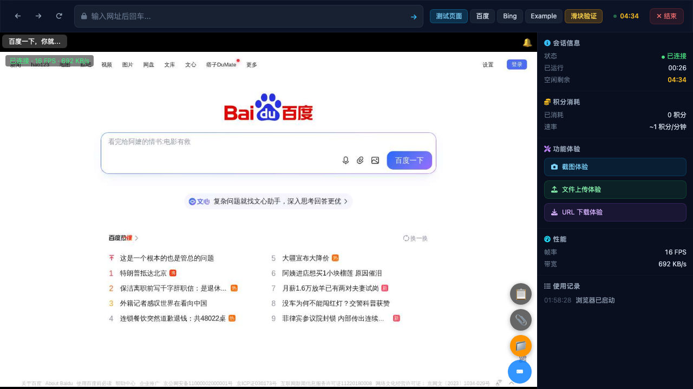
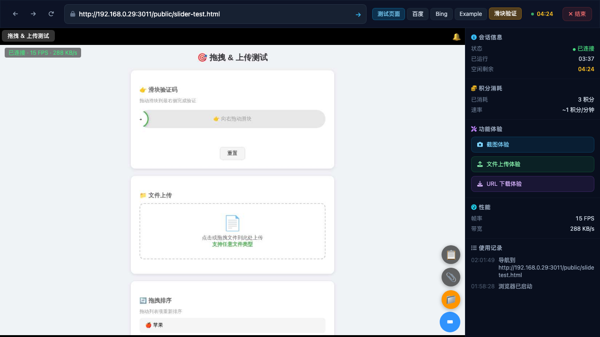
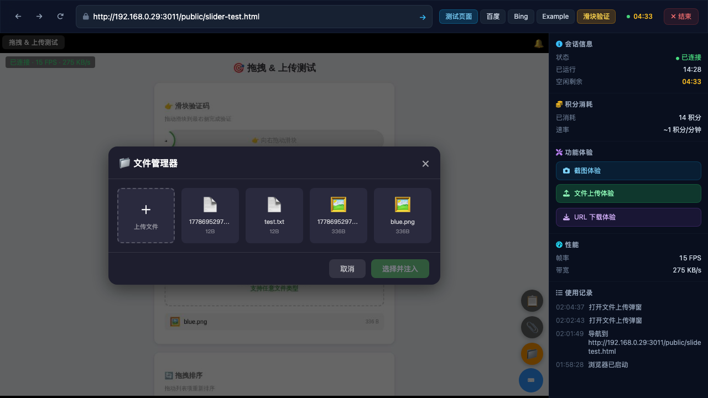
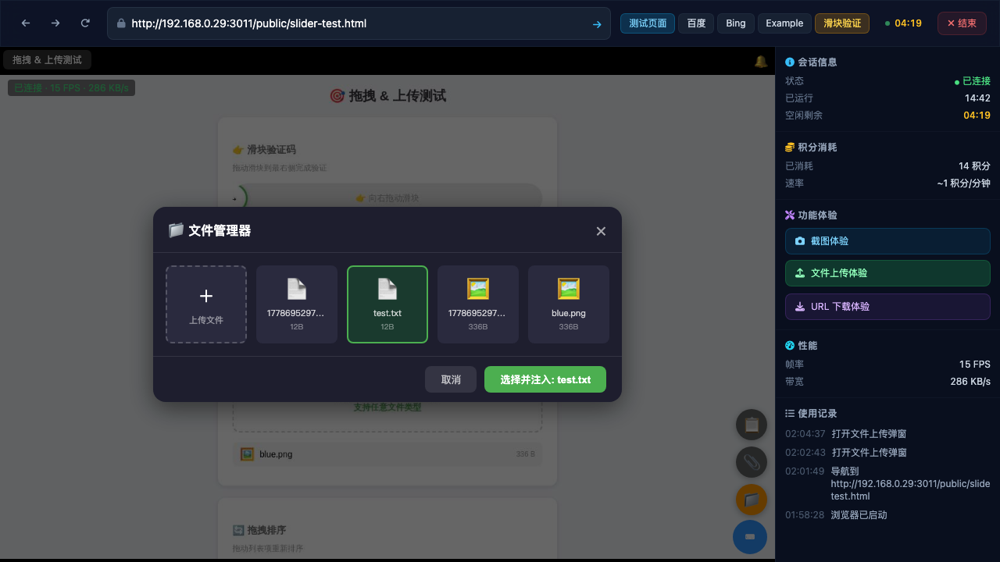
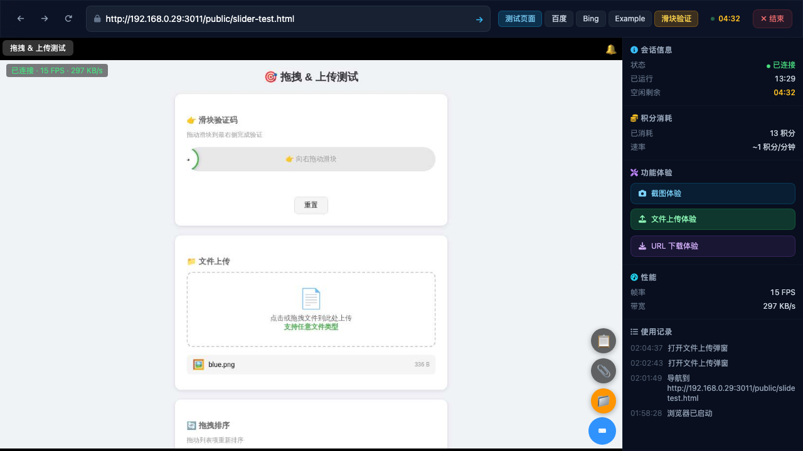

Opened demo page, clicked "开始体验", waited 15s for browser viewer to load. Remote browser showing Baidu homepage with control panel sidebar.

Uploaded blue.png (336B) and test.txt (12B) via /api/files/upload-session using demo user API key. Both files returned success with machineFilePath.
Discovery: API key is dynamically generated UUID per demo user (not static test-api-key-12345). Extracted from browser JS context: sessionId and demoApiKey variables.
Clicked "滑块验证" preset tab button. Remote browser navigated to /public/slider-test.html showing slider verification, file upload, and drag-sort sections.

Called BrowserViewer.instance._showFileManager() via viewer iframe. Dark-themed file manager modal appeared with file card grid showing 4 files (blue.png, test.txt + timestamped variants) and a "+" upload card.
Discovery: The sidebar "文件上传体验" button calls showUploadModal() (simple local upload), NOT _showFileManager() (session file browser with inject). These are two different modals.

Clicked blue.png card in file manager. Card highlighted with green border. "选择并注入" button updated to "选择并注入: blue.png" and became active (opacity: 1, pointer-events: auto).

Clicking the green "选择并注入" button resulted in "❌ 注入失败" error. Root cause: Path mismatch bug — file manager stores absolute paths (/app/data/temp/...) but the inject API (session.controller.ts:400) requires relative paths starting with data/temp.
Workaround: Direct API call with corrected relative path works: curl -X POST .../inject-file -d '{"machineFilePath":"data/temp/SESSION_ID/blue.png","selector":"input[type=\"file\"]"}'
After injecting both files via API (with corrected relative paths), the remote browser's slider-test page shows both files in the file upload section: blue.png (336 B) and test.txt (12 B). File injection into remote browser confirmed working.

_showFileManager()) correctly displays pre-uploaded session files in a dark-themed griddata/temp/SESSION_ID/file)browser-viewer.js stores /app/data/temp/... but session.controller.ts:400 requires data/temp/... (relative)showUploadModal) instead of file manager (_showFileManager) that shows session filestest-api-key-12345 which doesn't work. Need to extract from demo session creation response or browser JSblue.png is only 336 bytes (100x100 minimal PNG) — too small to meaningfully verify image rendering in remote browser| Component | Path Format | Code Location |
|---|---|---|
| File Manager (UI) | /app/data/temp/SESSION/blue.png | browser-viewer.js:_fmRefreshList() |
| Inject API (Backend) | data/temp/SESSION/blue.png | session.controller.ts:400 |
| Upload API (Response) | data/temp/SESSION/blue.png | upload-session returns machineFilePath |
Fix: In browser-viewer.js:_fmRefreshList(), the machineFilePath from the fileList WebSocket response should store the relative path, or the session.controller.ts:400 check should strip the /app/ prefix with path.normalize() adjustment.
| Parameter | Value |
|---|---|
| Target URL | http://192.168.0.29:3011/demo |
| Session ID | f7afe54d-e843-492b-9493-630e09315b7b |
| API Key | 0e359c9f-546e-40f4-a2f6-01551b260c9c (demo_user) |
| Remote Browser Page | /public/slider-test.html |
| Files Uploaded | blue.png (336B), test.txt (12B) |
| Browser | Chromium (agent-browser session) |